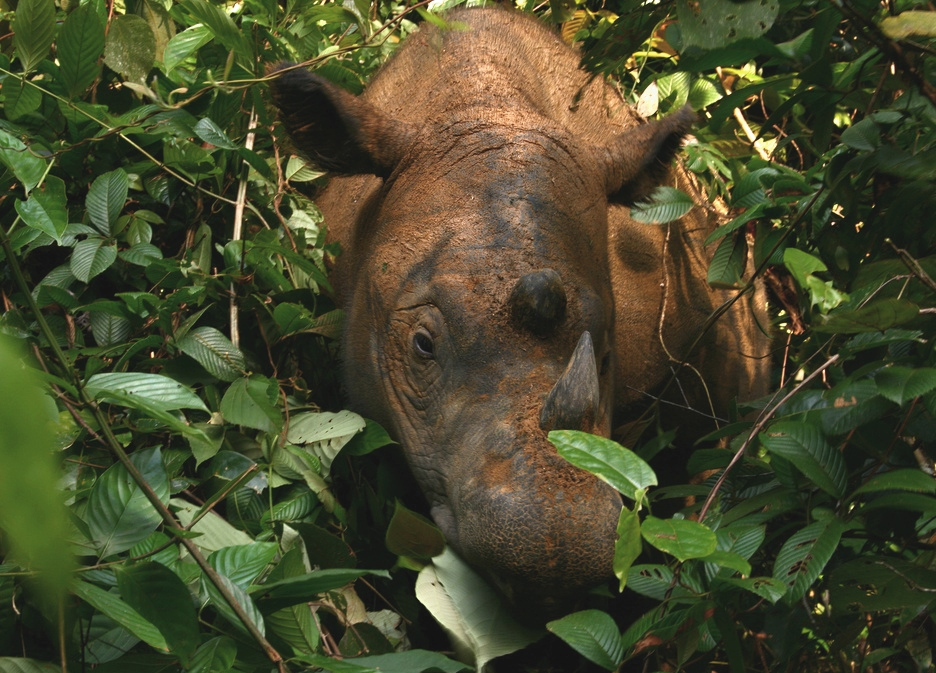

The Sumatran rhinoceros (Dicerorhinus sumatrensis),
also known as the Sumatran rhino, hairy rhinoceros or Asian two-horned rhinoceros, is a rare member of the family Rhinocerotidae and one of five extant species of rhinoceros. It is the only extant species of the genus Dicerorhinus. It is the smallest rhinoceros, although it is still a large mammal; it stands 112–145 cm high at the shoulder. The weight is reported to range from 500–1,000 kg , averaging 700–800 kg . Like both African species, it has two horns; the larger is the nasal horn, typically 15–25 cm (5.9–9.8 in), while the other horn is typically a stub. A coat of reddish-brown hair covers most of the Sumatran rhino's body.
The Sumatran rhinoceros once inhabited rainforests, swamps and cloud forests in India, Bhutan, Bangladesh, Myanmar, Laos, Thailand, Malaysia, Indonesia and southwestern China, particularly in Sichuan. It is now critically endangered, with only five substantial populations in the wild: four in Sumatra and one in Borneo, with an estimated total population of fewer than 80 mature individuals.The species was extirpated in Malaysia in 2019, and one of the Sumatran populations may already be extinct. In 2015, researchers announced that the Bornean rhinoceros had become extinct in the northern part of Borneo in Sabah, Malaysia. A tiny population was discovered in East Kalimantan in early 2016.
The Indonesian ministry of Environment, began an official counting of the Sumatran rhino in February 2019, planned to be completed in three years. Malaysia's last known bull and cow Sumatran rhinos died in May and November 2019, respectively. The species is now considered to be locally extinct in that country, and only survives in Indonesia. There are fewer than 80 left in existence.
